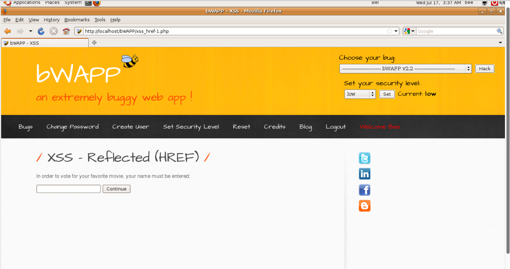
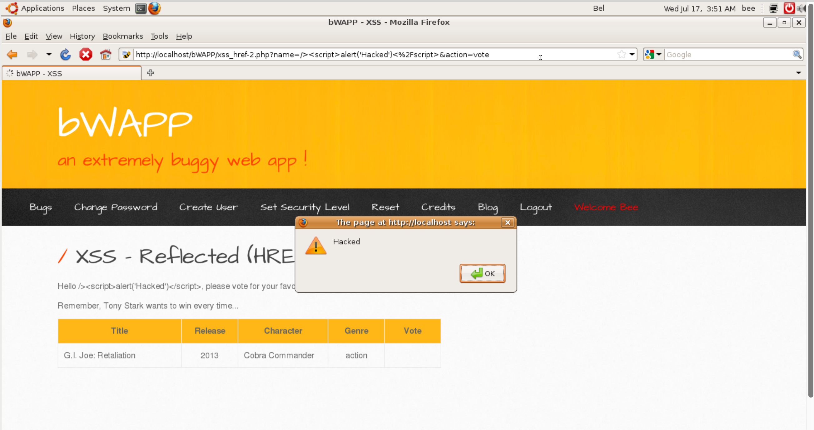
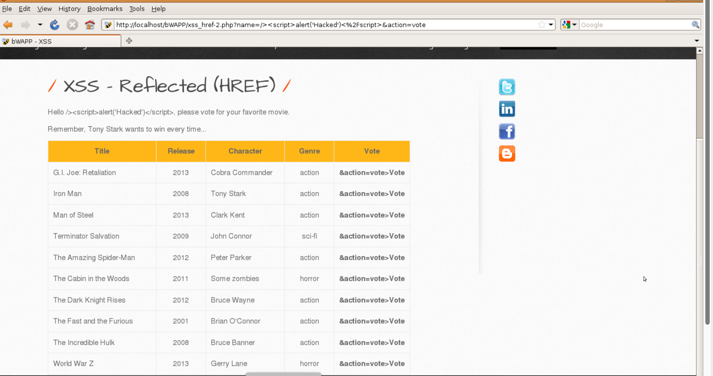

Open your web browser.
Navigate to the web page where you want to inject the script.
Right-click on the page and select "Inspect" or press Ctrl+Shift+I to open the developer tools.
You should see a panel appear at the bottom or side of your screen. This is the developer console.
Within the developer tools, find the "Elements" tab.
This tab shows the HTML structure of the page.
Locate the <head> section of the HTML code.
Click on the <head> section to select it.
Right-click and choose "Edit as HTML" or simply double-click to start editing the HTML code.
Introduce the following script tag:
<script>alert('Hacked')</script>Ensure the script tag is properly closed to avoid syntax errors.
<script>alert('Hacked')</script>Press Ctrl+Enter to save the changes.
Switch back to the browser window where the web page is open.
You should see an alert pop-up with the message "Hacked".
If multiple alerts are triggered, you will need to press the "X" button on each alert to close them.
Continue closing the alerts until no more appear.
